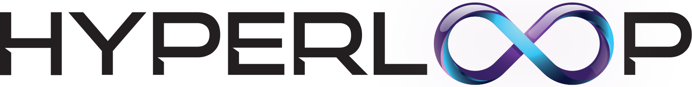
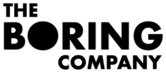

If something's important enough, you should try. Even if - the probable outcome is failure.
I think it matters whether someone has a good heart.

Elon Musk
Elon Reeve Musk FRS is a business magnate and investor. He is the founder, CEO, and Chief Engineer at SpaceX; angel investor, CEO, and product architect of Tesla, Inc.; founder of The Boring Company; and co-founder of Neuralink and OpenAI. With an estimated net worth of around $238 billion as of September 26, 2022, Musk is the wealthiest person in the world according to both the Bloomberg Billionaires Index and Forbes' real-time billionaires list.
Musk was born in Pretoria, South Africa, where he grew up. He briefly attended the University of Pretoria before moving to Canada at age 17, acquiring citizenship through his Canadian-born mother. Two years later, he matriculated at Queen's University and transferred to the University of Pennsylvania, where he received bachelor's degrees in economics and physics. He moved to California in 1995 to attend Stanford University but decided instead to pursue a business career, co-founding the web software company Zip2 with his brother Kimbal. The startup was acquired by Compaq for $307 million in 1999. The same year, Musk co-founded online bank X.com, which merged with Confinity in 2000 to form PayPal. eBay bought PayPal in 2002, for $1.5 billion.
In 2002, Musk founded SpaceX, an aerospace manufacturer and space transport services company, of which he serves as CEO and Chief Engineer. In 2004, he was an early investor in electric vehicle manufacturer Tesla Motors, Inc. (now Tesla, Inc.). He became its chairman and product architect, eventually assuming the position of CEO in 2008. In 2006, he helped create SolarCity, a solar energy company that was later acquired by Tesla and became Tesla Energy. In 2015, he co-founded OpenAI, a nonprofit research company promoting friendly artificial intelligence (AI). In 2016, he co-founded Neuralink, a neurotechnology company focused on developing brain-computer interfaces, and founded The Boring Company, a tunnel construction company. Musk has proposed a hyperloop high-speed vactrain transportation system and is the president of the Musk Foundation, which donates to scientific research and education.
Musk has been criticized for making unscientific and controversial statements, such as spreading misinformation about the COVID-19 pandemic and promoting contentious perspectives regarding politics and various technologies, especially on Twitter. In 2018, the U.S. Securities and Exchange Commission (SEC) sued Musk for tweeting that he had secured funding for a private takeover of Tesla, which the SEC characterized as false and misleading. He settled with the SEC but did not admit guilt, and he temporarily stepped down from his Tesla chairmanship. In 2019, he won a defamation case brought against him by a British caver who had advised in the Tham Luang cave rescue. In 2022, Musk agreed to purchase Twitter for $44 billion but later submitted a termination letter of the deal, leading to lawsuits between both parties.
Information literally copy pasted from Wikipedia.